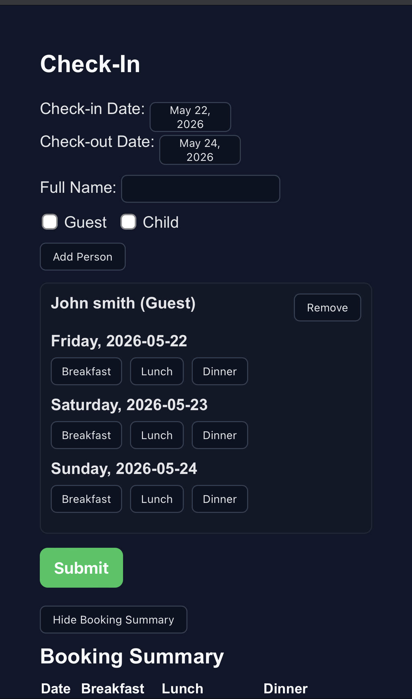
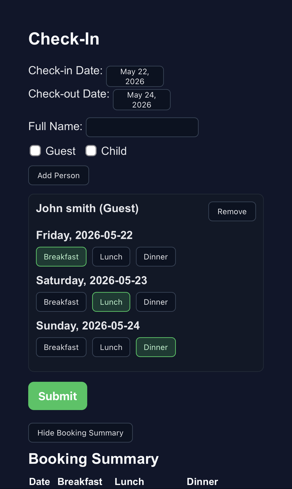
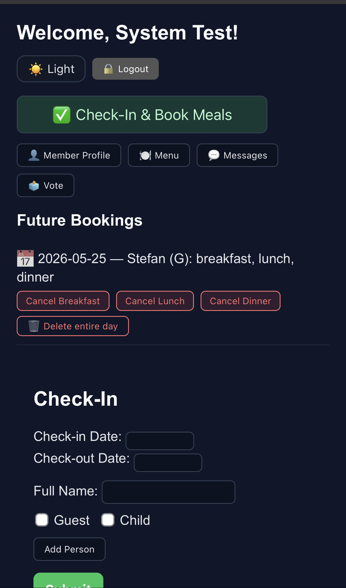
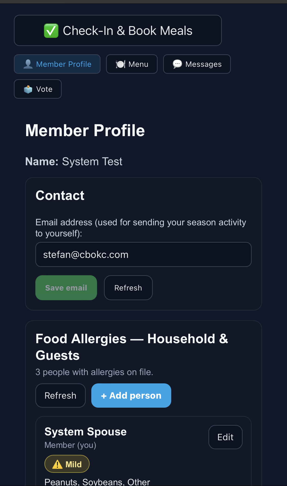
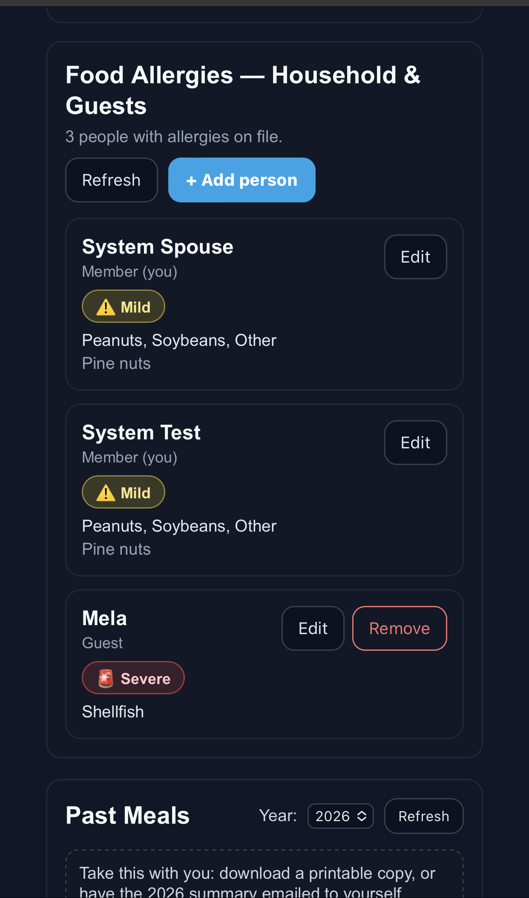
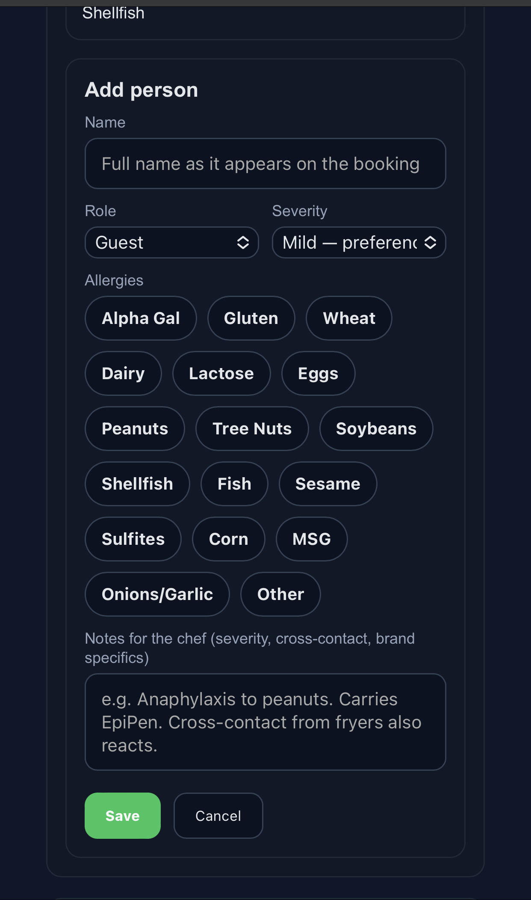
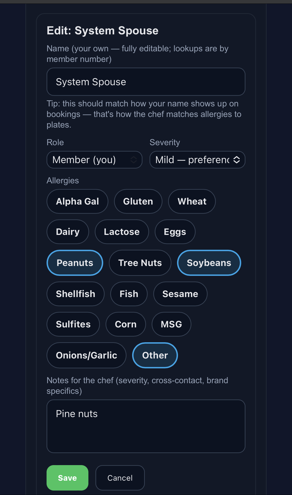
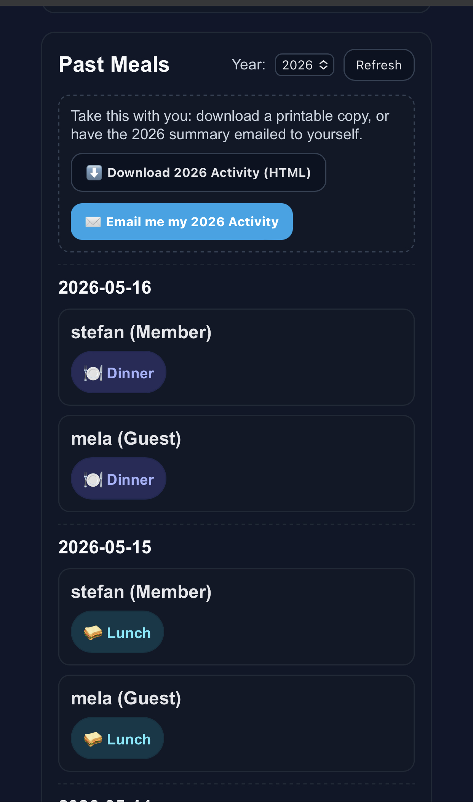
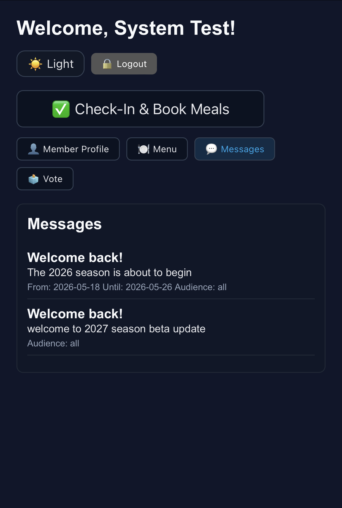
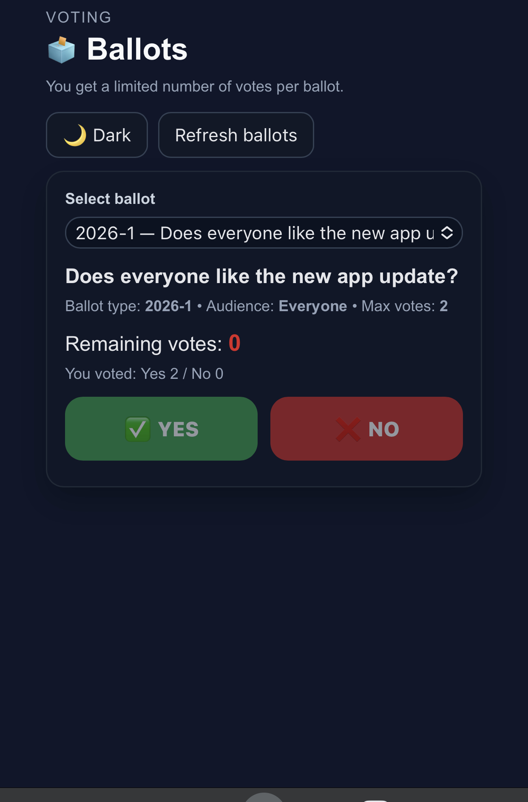

Wauhillau Club
Member Guide
How to book meals, register allergies for yourself and your guests, view the menu, read announcements, and cast votes. This guide matches the 2026 app.
1. Logging in
Each member has a unique PIN. The PIN is what tells the app who you are — your booking history, your profile, and your allergies are tied to it.
- Open the club app in any browser (phone, tablet, or computer).
- The first screen shows the Wauhillau logo and a box labeled Member PIN.
- Type your PIN and press Enter or tap the button below the box.
Forgot your PIN?
Contact a board member or the admin. PINs can be reset by the club admin from the Members screen — they don't need to call IT.2. The screen layout
After login you'll see five tabs across the top:
| Tab | What it's for |
|---|---|
| ✅ Check-In & Book Meals | The main booking screen. Pick dates, add people, choose meals. |
| 👤 Member Profile | Your email, allergy profiles for yourself and household members & guests, and your past meals. |
| 🍽️ Menu | What the chef is serving on upcoming dates. |
| 💬 Messages | Announcements from the club. |
| 🗳️ Vote | Cast your vote on open ballots. |
At the very top of every screen you'll also see a Light / Dark toggle and a Logout button. The dark mode is easier on the eyes at night; light mode is better in bright sun.

3. Check-In & Book Meals
This is where you reserve meals for your stay. You can book for yourself, your spouse or kids, and any guests on the same trip.
Booking your meals — step by step
- Pick your Check-in Date and Check-out Date. Use the calendar pickers — typing isn't required.
- Type a person's Full Name. Use the name that should appear on the chef's roster.
- If this person is not a member, check the Guest box. If they're under the age of guidelines for guest billing, check the Child box. Members shouldn't check either.
- Click Add Person. A card appears for them showing every day of your stay.
- For each day, tap the meals they want (Breakfast, Lunch, Dinner). Selected meals turn green.
- Repeat steps 2–5 for everyone in your party (spouse, kids, guests). Each person gets their own card so the chef knows individual counts.
- When everyone's selections are in, click Submit. You'll see a confirmation and the booking will appear in Future Bookings at the top of the screen.
Tip: Day names alongside dates
Each day in the booking flow shows the day of the week — for example "Saturday, 2026-05-23" — so you can spot weekends at a glance.

Meal cutoffs
You can't book meals after the chef's cutoff. The cutoffs (Central Time) are:
- Breakfast: 9:00 AM same day
- Lunch: 9:30 AM same day
- Dinner: 4:00 PM same day
- Tomorrow's breakfast: locks at 9:00 PM the night before
If a meal button is grayed out and you can't toggle it, the cutoff has already passed. Special weekends (Stag, WOW, Final Fling) have earlier deadlines — those are published well in advance.
Mondays and breakfast
Breakfast is normally not served on Mondays, with three exceptions: Memorial Day, 4th of July, and Labor Day weekends. On those Mondays you'll see Breakfast available; on regular Mondays it'll be disabled.Booking Summary
At the bottom of the Check-In page there's a Show Booking Summary button. Toggle it on to see a quick recap of which meals are booked for which days across everyone in your party — handy as a final sanity check before submitting.
4. Future Bookings — cancellations and changes
Any meals you've already booked appear at the top of the Check-In screen under Future Bookings.
Each line shows the date, the person's name, and which meals they have booked. Below each booking you'll see:
- Cancel Breakfast / Cancel Lunch / Cancel Dinner — removes just that one meal from the day.
- Delete entire day — removes every meal for that person on that day at once.
Cancellation cutoffs apply here too
You can only cancel a meal up to its cutoff time. After that, contact the chef directly if there's a real change of plans.
5. Member Profile
Your profile holds two things the kitchen and the club need from you: your email and your allergies.
Contact (email)
The Contact card has one field — your email address. The club uses it to send your end-of-season activity summary to you when you ask for one. It's never shared with anyone else.
- Type your email into the box.
- Click Save email. The button is disabled until you've actually changed the address, so a stray click won't re-save the same thing.
- If you mistype, click Refresh to reload what's on file and start over.

6. Allergies — Household & Guests
This is the most important part of the profile if you or anyone you bring has a food allergy or dietary restriction. The chef sees these on each booking, so accurate entries genuinely help the kitchen prepare safe plates.
What it looks like
The Food Allergies — Household & Guests card lists everyone you've registered. Your own entry is pinned at the top and labeled Member (you). Below that come spouses, children, and any guests with allergies that you've added.
Each row shows:
- The person's name as it appears on bookings.
- Their role (Member, Spouse, Child, or Guest).
- A ⚠ Mild or 🚨 Severe pill, or "No allergies" if nothing's flagged.
- The list of selected allergens.
- Any free-form notes for the chef.

Adding a person
- Click the blue + Add person button.
- Type the person's name — match the exact spelling that appears on their booking, so the chef sees the warning on the right plate.
- Pick a Role: Spouse / partner, Child, or Guest.
- Pick a Severity: No special severity, Mild (preference / discomfort), or Severe (life-threatening / anaphylaxis). Severe entries show in red to the chef.
- Tap any allergen chips that apply: Alpha Gal, Gluten, Wheat, Dairy, Lactose, Eggs, Peanuts, Tree Nuts, Soybeans, Shellfish, Fish, Sesame, Sulfites, Corn, MSG, Onions/Garlic, Other. Selected chips light up.
- In Notes for the chef, add anything specific: severity reactions, cross-contact concerns, brand-specific intolerances, EpiPen status, etc.
- Click Save.

For severe allergies
Flag Severity as Severe and add the details in Notes — for example "Anaphylaxis to peanuts. Carries EpiPen. Cross-contact from fryers also reacts." The chef gets a red 🚨 pill on every booking row that matches the name.Editing your own row
Your own profile (the one labeled Member (you)) is fully editable, including the name. Account history is keyed on your member number, not the spelling of your name, so you can use a nickname or married name freely. The tip in the editor reminds you to match the spelling the chef will see on bookings.

Removing a guest
Guests have both an Edit and a Remove button. Your own entry can only be edited — if you have no allergies, clear all the chips and the note, and leave it.
7. Past Meals & activity report
Below the allergies card, your profile shows every meal you've booked over the season, grouped by date.
Filtering by year
Use the Year selector to jump between seasons. Click Refresh if you've just made changes and want the list to reload.
Take a copy with you
There are two ways to get a personal record of your activity:
- ⬇ Download 2026 Activity (HTML) — saves a printable file to your device immediately.
- ✉ Email me my 2026 Activity — queues an email to the address on file in your profile. You'll receive it within a few minutes.
Tip
The email button is disabled if you haven't saved an email in the Contact section yet. Save your email first, then come back.
9. Messages
Club announcements from the admin appear here. Examples: season-start notices, work weekend reminders, holiday meal updates, board notes for board members.
Each message shows the title, the body text, and the active window underneath — for example From: 2026-05-18 Until: 2026-05-26. Messages outside their active window don't appear at all.
Some messages carry an Audience: board tag — those are only visible to board members. As a regular member you'll never see them; as a board member they'll show up alongside the others.

10. Vote
When the admin opens a ballot, it shows up here.
- Pick a ballot from the Select ballot dropdown. Each ballot lists its type code and a brief description.
- The ballot details show: audience (who can vote), max votes (how many times you can cast a yes or no), and remaining votes (what you have left).
- Tap ✅ YES or ❌ NO. A confirmation step appears — votes are final once confirmed, so the confirm is a deliberate moment to check yourself.
- Confirm. Your vote is recorded immediately. The remaining-votes counter ticks down.
What "max votes" means
Some ballots let you cast more than one vote — for example a 2-vote ballot might let you vote Yes on one matter and No on another, or Yes twice on a strongly-supported item. Most ballots are 1-vote. Look at the Max votes line on each ballot.If you've already used all your votes for a ballot, the YES and NO buttons go gray and you'll see your tally just above them — e.g. You voted: Yes 2 / No 0. Votes can't be changed once submitted, so the limit is firm.
Board-only ballots are invisible to non-board members. You'll never see one you can't vote on. If you're on the board and you don't see a ballot you expect, ask the admin to confirm your role flag is set in your member record.

11. Light / Dark mode
The button labeled ☀ Light or 🌙 Dark at the top of every screen swaps the app's color scheme.
Pick whichever you find easier to read. The choice is remembered on your device for next time. Members frequently mention they prefer dark mode on phones at night and light mode on tablets during the day — switch freely.
12. FAQs & troubleshooting
The page looks broken / a button isn't working
Try a hard refresh first: hold Shift and click the browser's reload button (or press Ctrl+Shift+R on Windows, Cmd+Shift+R on Mac). That solves about 90% of one-off display issues.
I don't see a ballot I should see
Ballots are filtered by audience. If it's a Board-only ballot and you aren't flagged as board, you won't see it. Talk to the admin if you think your role is wrong.
I can't book breakfast on a Monday
Working as designed — see the Mondays and breakfast note in section 3. Memorial Day, 4th of July, and Labor Day weekends are the exceptions.
I booked the wrong person — can the chef sort it out?
Cancel the wrong meal yourself if you're still inside the cutoff window. If the cutoff has passed, contact the chef directly. The chef can edit any booking from their dashboard regardless of cutoff.
My allergy isn't on the chip list
Pick the closest match, then use the Notes for the chef field to spell out what's actually involved (e.g. tap "Other" and write "Pine nuts"). Severe allergies should ALWAYS include a note explaining the reaction and any required medication.
I changed my email but didn't get the activity report
Make sure you clicked Save email before clicking Email me my 2026 Activity. The email goes to whatever address is saved at the moment you request it. Also check your spam folder.
The app remembers I'm logged in. Can I keep myself logged in on a shared computer?
The session stays open until you click Logout. On a shared computer (like the family iPad or a club tablet) please log out when you're done. Anyone with access to that browser session can see and modify your bookings.
Who do I contact for anything else?
For meal questions or last-minute changes: the chef. For account or PIN issues: the club admin. For app bugs or feature requests: bring it up at the next board meeting or use the contact email shared by the board.